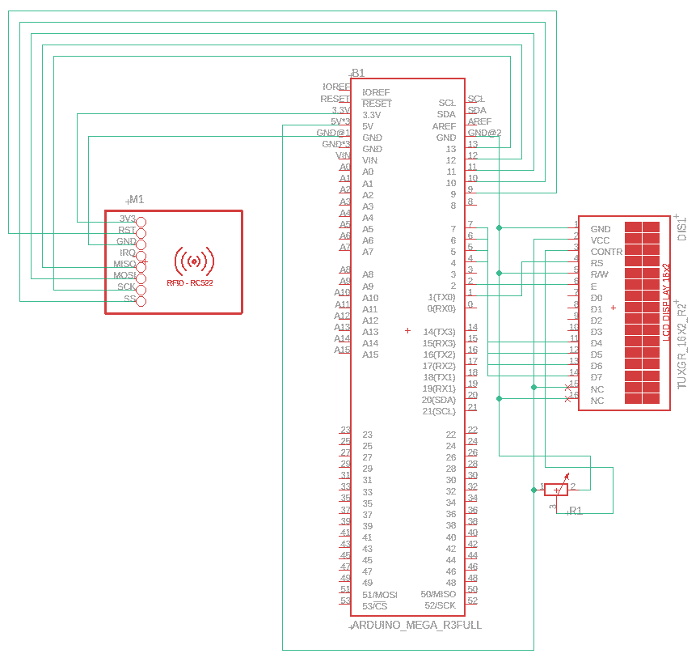
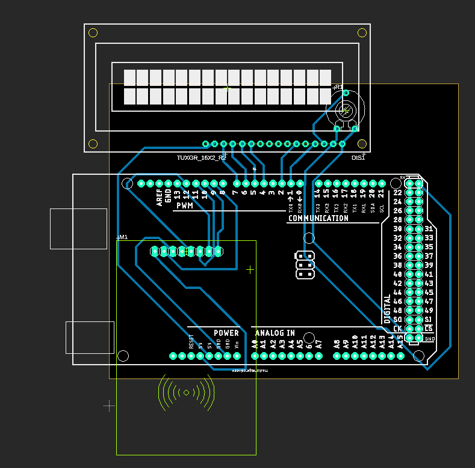

Prosjekt 3 (Oppgave4)
PCB Design ( RFID Deteksjons Boks )
Bachelor oppgaven min biter meg i ræva, så derfor forsøkte jeg å gjøre to fluer i en smekk ved å lage noe som faktisk hadde hjulpet bachelor oppgaven min til denne obligen.
Det var lettere sagt en gjort.
Her har jeg forsøkt å lage et kretskort design til en simpel elektronisk boks som skal kunne finne ut når en RFID lesbar chip puttes i den -og hvise dette på en 16x2 LCD skjerm.
Jeg begynte (som vanlig) alt for seint, så en oppgave jeg trodde skulle bli relativt lett endte opp med å bli hastverk og lastverk.
Beta versjon av Kretskort til Bachelor
Dette er arbeidsfilene fra Eagle
Last ned PCB Prosjekt Zip, inkludert Gerber filerFremgang
Jeg begynte ikke arbeid på oppgaven før torsdag siste uken mot den originale fristen, og dette rett etter PSUen til min stasjonære PC så ut til å ha dødd. Etter å ha sendt denne på reperasjon satt jeg i gang på min 8 år gamle laptop, som slet selv med å loade Eagle. Dette gikk generelt sett kjempe treigt, men jeg slet også litt med å finne de "parts-library" delene jeg trengte for å fullføre oppgaven. >br />Etter mye strev måtte jeg krype til korset og be om utsatt frist på oppgaven.
Til slutt kom jeg i gang med oppgaven, og fikk endelig tak i en library pakke med en RC522"del", helt lik den vi bruker i bachelor oppgaven min.
Jeg fikk også klar gjort at de partsene jeg hadde tilgang til for LCD 16X2 skjermer fungerte for vår "adm1602k-nsw-fbs" skjerm, og vårt pentiometer.
Etter en god stund på youtube med tutorials fra kanaler som "Kitflix" var jeg i gang med schematicen til designet mitt. Det skal sies at jeg husket svært lite av detaljene fra undervisnngen i Februar, dog jeg husket at jeg ikke syntes det var så komplisert da. Jeg er ganske så misfornøyd med koblingen jeg har gjort av ledninger på dette stadiet, ettersom dette skapte en del problemer når jeg skulle "route" kretsene i "board" filen min.
De fire komponentene brukt er en Arduino Mega, En RC522 RFID leser, et Pentiometer og en 16x2 LCD skjerm.
LCD Skjermen bruker Arduino Megaen sin 5Volts pin, og RFID-leseren bruker 3Volts pinnen.
GND pinner er alltid koblet til GND, så never det ikke case by case.
Skjermen og Pentiometeret er koblet sammen i skjerments Contrast(Display Contrast) pin.
Skjermen er koblet til Arduino Megaen sin digitale pins fra 4 til 7, med samme pins på skjermen.
Skjermens "Enable" pin er koblet til Arduinoens digitale pin nr2.
Skjermens RS pin(Register Select) er koblet til Arduinoens pin nr1.
Skjermens RW pin(Read Write) er koblet til GND.
Skjermens Cathode pin er koblet til GND og Anode til 5Volts.
RFID Leseren sin RST pin er koblet til Arduinoens digitale pin nr9.
RFID Leseren sin IRQ er ikke koblet til Arduinoen.
RFID Leseren sin MISO pin er koblet til Arduinoens digitale pin nr12
RFID Leseren sin MOSI pin er koblet til Arduinoens digitale pin nr11
RFID Leseren sin SCK pin er koblet til Arduinoens digitale pin nr13
RFID Leseren sin SDA pin er koblet til Arduinoens digitale pin nr10
Etter litt flere tutorials prøvde jeg med på å gjøre klart et board som kunne gjøres til Gerber filer.
